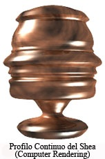

The Continuous Profile®

Background
The human head in profile has been part of the art world for centuries in paintings, murals, and other forms. Two-dimensional “Silhouettes” of the head in profile were widespread during the Revolutionary period in America, as evident in wall hangings in Thomas Jefferson’s estate, Monticello. Silhouettes were again popular in the 1920s and 1930s, whereby the head in profile was cut out of black paper and mounted on a white background. To the present day, silhouettes are still created and displayed as a form of art. An Italian artist, Renato Bertelli (1900 – 1974) created Profilo continuo del Duce (Continuous profile of Mussolini) in Florence in 1933. Two quite different versions of Bertelli’s work exist in museums in Miami and London. Made of Terra Cotta on a potter’s wheel, the profiles are approximately the size of the human head.
The concept of the Continuous Profile® is a 3-dimensional rendering that employs a process where the frontal portion of the human head in profile is used as a pattern for turning on a wood lathe. The resulting object is an abstraction of the subject’s facial profile that is identical throughout the entire 360 degrees when the object is rotated on the vertical axis. Similar to snowflakes and fingerprints, it is believed that no two human profiles are exactly the same; therefore all Continuous Profiles® are unique, yielding infinite variability.
The primary use for the resulting Continuous Profile® is as an abstract art-deco form in wood, terra cotta, plastic, or other material, similar in concept to the famous busts of Plato, Beethoven, Bach, and Brahms. The Continuous Profile® concept might also be used as abstracted personalization of everyday objects such as bed posts, newel posts, gearshift knobs, lamp bases. The process of turning a Continuous Profile® on the wood lathe yields an interesting, if not somewhat disorienting abstraction of the human face. It is often challenging for the viewer to resolve the resulting object back to the source, but – much like Magic Eye 3D computer images – once the image is recognized a satisfying “Aha!” moment occurs for the

viewer. Since a single pattern is used in the manufacture, one pattern can be used to create one unique profile, or if desired, re-used to generate a thousand or more of the same. Perhaps there would be mass appeal for The Continuous Profiles of presidents, historical persona, and pop culture stars. Examples may include Barack Obama, Charles Darwin, and Elvis Presley.
Computer rendering of a Continuous Profile® allows the craftsman to verify the design prior to turning a block of wood on the lathe. The 3D animation software used to create the electronic rendering requires that the digital image (raster format) be converted to a vector format prior to processing. The resulting animations have been used as virtual trading cards shared on the Internet and as unique pictures on FaceBook.
Copyright © 2012 - 2014 The Continuous Profile LLC